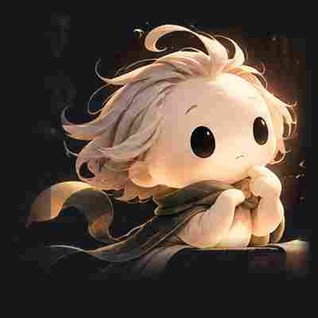

Happy facial rig — feasibility v1
CZ-81 Phase A/B · articulated SVG feature rig over the unchanged approved portrait · head fully static

State: neutral
Prototype notes. The JPEG portrait is flat, so the original fixed neutral
mouth mark (and, while lifted, the faint brow dashes) are softly masked and the happy
mouth, lids, brows and cheeks are redrawn as interpolated SVG feature curves — no pixels
of the portrait are moved and the head never transforms. If feature masks ever read as
pasted-on stickers at this fidelity, that is a known limitation of the flattened source,
not a solved deformation. Human art review and real iPhone/Safari validation
PENDING.